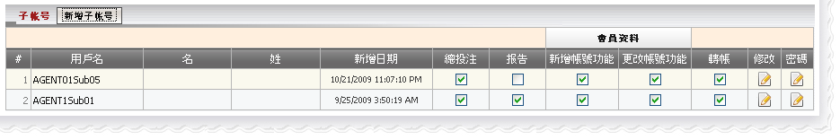
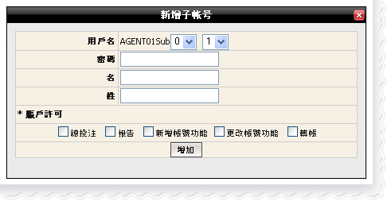

子賬號
定義:
子賬號是有限制權限可登陸代理系統的賬號, 基本上子賬號可以訪問:
而這些權限都將由主賬號設定。此外, 主賬號也能夠編輯子賬號的名字, 姓氏及密碼甚至關閉該子賬號。

子賬號
注
- 要阻止子賬號訪問某些功能, 不選擇該功能的複選框,反之亦然
- 要關閉賬號, 單擊在 "編輯" 欄中的圖標
- 要更改密碼, 單擊在 "密碼" 欄中的圖標
- 只可以創建10個子賬號
如何創建子賬號?
第一步: 點擊"新增子賬號"按鈕
第二步: 從下拉列表中選取一個數字作為子賬號的用戶名
格式: [主賬號] [Sub][1][2], 例如: AgentSub01
第三步: 輸入密碼(注意: 密碼必須最少6個字符,其中包括至少 2 個號碼和 2 個數字
第四步: 選取個別功能(總投注,報告,新增賬號功能,更改賬號功能及轉賬)以授予子賬號權限
第五步: 點擊 "增加" 鍵以完成新增子賬號

新增子賬號